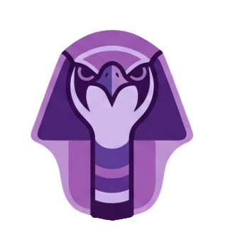

Built with OSIRIS

OSIRIS is one application for the whole modding job — attach to a title you own, dump its SDK, watch memory live, and inject — instead of five separate tools and a folder of scripts.
Every mod means the same four steps rebuilt by hand: attach, understand, edit, iterate. OSIRIS is the shell that holds all of it — and the AI that reads the dump with you.
One-click DLL injection with process detection and version checks, so you attach to the right build every time.
Dump classes, offsets and functions, then browse them — a real class tree instead of grepping header dumps by hand.
Scan, watch and edit named fields live — Health, Ammo, FOV — not raw addresses you have to re-find every patch.
The pieces every mod needs — the ones worth building once instead of rewriting per project.
One-click DLL injection with process detection and version checks.
Ask about a game's SDK and get answers grounded in the actual dump.
Expose the loaded game to an AI tool so it can read structures directly.
Class browser, offset finder and function search over a dumped SDK.
Scan, watch and edit values live, with named fields instead of raw addresses.
Navigate classes, fields and flags without grepping header dumps by hand.